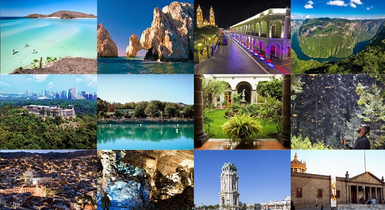

GEOGRAFÍA
México se encuentra entre las coordenadas 32° y 14° norte y 86° y 118° oeste; casi toda la superficie del país se ubica en la placa Norteamericana, aunque con algunas partes de Chiapas en la placa del Caribe y de la península de Baja California en la placa de Cocos y la placa Pacífica, geofísicamente, algunos geógrafos incluyen el territorio al este del istmo de Tehuantepec en América Central. Sin embargo, geopolíticamente, México es considerado dentro de América del Norte, junto con Canadá y los Estados Unidos.
El país cubre una superficie total de 1 964 375 km², de los cuales 1 959 248 km² corresponden a su superficie continental y 5127 km² a su superficie insular. En su superficie, cuenta también con 3 269 386 km² de agua en su zona económica exclusiva, misma que limita con la zona económica exclusiva de cinco países, estos son los Estados Unidos, Guatemala, Belice, Honduras y Cuba. En tierra, limita al norte con los Estados Unidos a lo largo de 3155 km, mientras que al sureste comparte frontera con Guatemala en 958 km y con Belice en 276 km. Tiene 9330 km de litorales continentales, por lo que ocupa el segundo lugar en el continente americano, solo después de Canadá; la extensión de sus costas están repartidas en dos vertientes: al oeste, el océano Pacífico y el golfo de California; y al este, el golfo de México y el mar Caribe, que forman parte de la cuenca del océano Atlántico. Sobre el océano Atlántico el país tiene 3 117.7 kilómetros lineales de costas y 8 475.1 km más sobre el océano Pacífico, incluido el mar de Cortés. 17 de las 32 entidades federativas de México tienen costa: Baja California, Baja California Sur, Colima, Chiapas, Guerrero, Jalisco, Michoacán, Nayarit, Oaxaca, Sinaloa, Sonora, Yucatán, Tamaulipas, Veracruz, Tabasco, Campeche y Quintana Roo; las once primeras en el océano Pacífico. Estos 17 estados costeros constituyen 56.3 % de la superficie continental del país, y en ellos existen 153 municipios con frente costero constituidos por 35 626 localidades.
RELIEVE
El relieve mexicano se caracteriza por ser muy accidentado y alojar múltiples volcanes. Por su geomorfología, el país se divide en 15 provincias fisiográficas, estas son la península de Baja California, la Llanura Sonorense, la Sierra Madre Occidental, las Sierras y Llanuras de Norteamérica, la Sierra Madre Oriental, la Gran Llanura de Norteamérica, la Llanura Costera del Pacífico, la Llanura Costera del Golfo Norte, la Mesa del Centro, el Eje Neovolcánico, la península de Yucatán, la Sierra Madre del Sur, la Llanura Costera del Golfo Sur, las Sierras de Chiapas y Guatemala y la Cordillera Centroamericana.
El territorio es recorrido por las sierras Madre Oriental y Madre Occidental, que son una prolongación de las Montañas Rocosas. La Sierra Madre Occidental termina en Nayarit, en la confluencia con el Eje Neovolcánico. A partir de allí, paralela a la costa del Pacífico, corre la Sierra Madre del Sur.
El Eje Neovolcánico atraviesa el territorio del oeste al oriente, hasta unirse con la Sierra Madre Oriental en el Escudo Mixteco o Zempoaltépetl (a 3395 m s. n. m. de altitud). En el Eje Neovolcánico, de gran actividad volcánica como su nombre lo indica, se ubican los picos más altos de México: el Pico de Orizaba o Citlaltépetl (5610 m s. n. m.), el Popocatépetl (5462 m s. n. m.), el Iztaccíhuatl (5286 m s. n. m.), el Nevado de Toluca (4690 m s. n. m.) La Malinche (4461 m s. n. m.) y el Nevado de Colima (4340 m s. n. m.). En esta provincia geológica tuvo lugar el nacimiento del Paricutín, el volcán más joven del mundo.
Las prolongaciones al sureste de la sierra Madre Oriental son conocidas como Sierra Madre de Oaxaca o de Juárez, que concluye con la Sierra Madre del sur en el istmo de Tehuantepec. Al oriente de esta región se extienden la Mesa Central de Chiapas y la Sierra Madre de Chiapas, que tiene su punto culminante en el volcán Tacaná (4117 m s. n. m.).
Los accidentes geográficos más visibles del territorio mexicano son la península de Baja California, en el noroeste, y la península de Yucatán, al oriente. La primera es recorrida de norte a sur por una cadena montañosa que recibe los nombres de Sierra de Baja California, de Sierra de San Francisco o de la Giganta. Su punto más alto es el volcán de las Tres Vírgenes (2054 m s. n. m.). La península de Yucatán, por el contrario, es una plataforma de piedra caliza casi completamente llana.
Ubicada entre las sierras Madre Oriental y Occidental, y el Eje Neovolcánico, está la Altiplanicie Mexicana, que a su vez es dividida en dos partes por pequeñas serranías como la de Zacatecas y las de San Luis. La parte norte es más árida y más baja que la sureña. En ella se localizan el desierto de Chihuahua y el semidesierto de Zacatecas. Al sur de las serranías transversales se encuentra la fértil región del Bajío y numerosos valles de tierra fría o templada, como la Meseta Tarasca, los valles de Toluca, México, y el Poblano-Tlaxcalteca. En esta mitad sur del altiplano se concentra la mayor parte de la población mexicana.
Entre el Eje Neovolcánico y la Sierra Madre del Sur se localiza la Depresión del Balsas y la Tierra Caliente de Michoacán, Jalisco y Guerrero. Al oriente, atravesando la intrincada Sierra Mixteca, se encuentran los Valles Centrales de Oaxaca, rodeados por montañas abruptas que complican el acceso y las comunicaciones.
Repartidas en su mar territorial se hallan numerosas islas, entre las que destacan los archipiélagos de Revillagigedo (Socorro, Clarión, San Benedicto, roca Partida), y las islas Marías, en el Pacífico; las de Guadalupe, Cedros, Ángel de la Guarda, Coronado, rocas Alijos, isla del Tiburón, isla del Carmen, frente a la península de Baja California y la costa de Sonora; y las de Ciudad del Carmen, Cozumel, Mujeres, y el arrecife Alacranes, en la cuenca atlántica. En conjunto suman una superficie de 5073 km².
CLIMA
México es un país con una gran diversidad climática. La situación geográfica del país lo ubica en dos áreas bien diferenciadas, separadas por el trópico de Cáncer. Este paralelo divide al país en dos zonas cuyos climas serían claramente distintos (una zona tropical y una templada) si no fuera por el hecho de que el relieve y la presencia de los océanos influyen mucho sobre la configuración del mapa de los climas en el país.
De esta forma, en México es posible encontrar climas fríos de alta montaña a unos cuántos centenares de kilómetros de los climas más calurosos de la llanura costera. El más notable por sus variaciones es el clima del estado de Chihuahua, donde se dan las temperaturas más bajas del país, que llegan en ocasiones a los −30 °C, y las más altas en el desierto de Mexicali, Baja California que en ocasiones supera los 50 °C. La zona cálida lluviosa comprende la llanura costera baja del golfo de México y del Pacífico. En esta región las temperaturas oscilan entre los 15,6 °C y los 40 °C. Una zona cálida comprende las tierras localizadas entre los 614 m s. n. m. y los 830 m s. n. m. Aquí, las temperaturas oscilan entre los 16,7 °C en enero y de 21,1 °C en julio. La zona fría va desde los 1830 m s. n. m. hasta los 2745 m s. n. m. de altitud.
El clima templado subhúmedo o semiseco alcanza temperaturas que oscilan entre los 10 y los 20 °C y presenta precipitaciones no mayores a los 1000 mm anuales. A una altitud superior a 1500 m s. n. m., la presencia de este clima depende de la latitud de la región. En las áreas con este tipo de clima, las heladas son una constante que se presenta cada año, así también la presencia de aguanieve y nevadas anuales que suelen ser más comunes en el norte del país y en las zonas montañosas.
Un segundo tipo de clima lo constituyen el cálido-húmedo y el cálido-subhúmedo. En las zonas con este clima, llueve durante el verano o a lo largo de todo el año. La pluviosidad alcanza el índice de 1500 mm, y presenta una media anual térmica que oscila entre los 24 y 26 °C. Las zonas con este tipo de clima se ubican en las planicies costeras del golfo de México, del océano Pacífico, el istmo de Tehuantepec, en el norte de Chiapas y en la península de Yucatán.
El trópico seco presenta variedades de los climas anteriores. Se localiza en los declives de la Sierra Madre Occidental y Oriental, las cuencas altas de los ríos Balsas y Papaloapan, así como en ciertas regiones del istmo de Tehuantepec, la península de Yucatán y el estado de Chiapas. El trópico seco es, por lo tanto, la zona más amplia de los climas cálidos extremosos en México.
Las zonas templadas son las regiones donde la precipitación anual es menor a 350 mm. La temperatura anual varía entre los 15 y los 25 °C, y su índice de precipitación también es sumamente variable. La mayor parte del territorio mexicano, ubicado al norte del trópico de Cáncer, es una zona con este tipo de características.
La estación húmeda se extiende entre los meses de mayo y octubre. En promedio llueve durante 70 días al año. La tónica dominante, sin embargo, es la escasez de lluvia en la mayor parte del territorio, hecho relacionado con los obstáculos que representan a las nubes de lluvia las altas montañas que enmarcan la Altiplanicie Mexicana. En la zona templada altiplánica del país, el promedio de lluvia es de 635 mm anuales. La zona más fría, de alta montaña, registra índices de 460 mm. En tanto, el semidesierto del norte del Altiplano apenas alcanza 254 mm de lluvia anuales. En contraste con la aridez de este territorio (que concentra el 80 % de la población mexicana), existen algunas regiones que pueden recibir casi 1000 mm y hasta 3000 mm.
El promedio de temperatura para el país es de unos 19 °C. Sin embargo, la Ciudad de México presenta sus promedios extremos en los meses de enero (12 °C) y julio (16,1 °C). En contraste con Ciudad Juárez, Mexicali, Culiacán, San Luis Potosí, Hermosillo, Chihuahua, Torreón, Saltillo y Monterrey donde las temperaturas son realmente extremas.
CAMBIO CLIMÁTICO
El cambio climático en México se refiere a los efectos del cambio climático en México. Las proyecciones indican que México sufrirá una disminución significativa en las precipitaciones anuales y aumentos en las temperaturas. Esto ejercerá presión sobre la economía, las personas y la biodiversidad de muchas partes del país, que tienen grandes climas áridos o cálidos. El cambio climático ya ha afectado la agricultura, la biodiversidad y los medios de vida de los agricultores, lo que ha empujado la migración. También se han visto afectadas "el agua, la salud, la contaminación del aire, la interrupción del tráfico por inundaciones y la vulnerabilidad de las viviendas a los deslizamientos de tierra".
Los patrones de precipitación alterados y el aumento de las temperaturas han llevado a la inseguridad económica en México, particularmente para los pequeños agricultores que producen los cultivos de México económica y culturalmente importantes: maíz y café. Los impactos del cambio climático son especialmente severos en la Ciudad de México debido al aumento de la contaminación del aire. Los impactos ecológicos del cambio climático dentro de México incluyen reducciones en la conectividad del paisaje y patrones migratorios cambiantes de los animales. Además, el cambio climático en México está vinculado al comercio mundial y los procesos económicos que se relacionan directamente con la seguridad alimentaria mundial.
En 2012, México aprobó un proyecto de ley integral sobre cambio climático que estableció el objetivo de que el país genere el 35% de su energía a partir de fuentes de energía limpia para el 2024 y reduzca las emisiones en un 50% para el 2050, tomando como nivel base las emisiones del 2000. Durante la Cumbre de Líderes de América del Norte de 2016, se anunció el objetivo de que el 50% de la electricidad sea generada a partir de fuentes renovables para 2025. Se han implementado varios esfuerzos de mitigación climática en todo el país. México es considerado un país líder en mitigación y adaptación climática.
BIODIVERSIDAD
México es uno de los 17 países megadiversos del mundo. Con alrededor de 200,000 especies diferentes, México es hogar del 10 al 12 por ciento de la biodiversidad mundial.México se encuentra en el primer lugar en biodiversidad de reptiles con 733 especies conocidas, segundo en mamíferos con 448 especies, cuarto en anfibios con 290 especies, y cuarto en flora, con 26,000 diferentes especies. México es también considerado el segundo país en el mundo en ecosistemas y el cuarto en total de especies. Aproximadamente 2500 especies están protegidas por la legislación mexicana. El gobierno mexicano creó el Sistema Nacional de Información acerca de la Biodiversidad, que se encarga de estudiar y promover el uso sustancial de los ecosistemas.
En México, 170,000 kilómetros cuadrados son considerados «Áreas Naturales Protegidas». Incluidos 34 biosferas reservas (ecosistemas inalterados), 64 parques nacionales, 4 monumentos naturales, 26 áreas para proteger la flora y la fauna, 4 áreas para la protección natural y 17 santuarios (zonas con rica diversidad de especies).
TURSIMO
El turismo es una actividad económica importante para el país y lo hace una de las naciones más destacables a nivel mundial, colocado en decimotercer lugar en términos de llegadas de turistas internacionales, con 23.4 millones de visitantes en 2011 y 2012, y siendo el primer destino para turistas extranjeros dentro de América Latina. En 2005, el turismo contribuyó con el 5.7 % de los ingresos nacionales provenientes de la exportación de bienes y servicios, y representó el 14.2 % de los empleos directos e indirectos de la economía mexicana. Los ingresos provenientes de los turistas extranjeros alcanzaron USD 11,270,000,000 (once mil doscientos setenta millones) en 2009, y el país capturó el 15.25 % del segmento de mercado turístico de América en términos de llegadas de turistas extranjeros, colocado en segundo lugar en el continente, solo detrás de los Estados Unidos.
Las principales atracciones turísticas de México son las ruinas antiguas de las culturas mesoamericanas, las ciudades virreinales y los complejos turísticos de playa. La riqueza natural y la herencia histórica cultural —la fusión de la cultura europea (particularmente la española) con la cultura mesoamericana—; también hacen de México un atractivo destino turístico a nivel mundial. La gran mayoría de los turistas extranjeros que visitan México provienen de los Estados Unidos y Canadá. El siguiente grupo en importancia son visitantes de Europa y Asia. Un número reducido de turistas también proviene de los países de América Latina. Sin embargo, el turismo mexicano ha generado una derrama económica importante para el país donde los prestadores de servicios buscan una mayor difusión y atención hacia los turistas nacionales creando nuevos polos turísticos y recreativos patrocinados por FONATUR quien se ha dado la tarea de estudiar las preferencias y gustos de los mexicanos en sus días de descanso; se han mejorado y rehabilitado las vías de comunicación y transporte, remodelación de los aeropuertos de mayor actividad, actualización de los sistemas de telecomunicaciones, apertura de créditos para nueva infraestructura de hostelería y prestación de servicios, apertura de casinos o casas de apuesta, mejoramiento sanitario y mayor seguridad en zonas de actividad recreativa.
En la clasificación del Índice de Competitividad en Viajes y Turismo (TTCI por sus siglas en inglés) de 2011, que mide factores que hacen atractivo realizar inversiones o desarrollar negocios en el sector de viajes y turismo de un país específico, México alcanzó el lugar 43 a nivel mundial, siendo el primero clasificado entre países de América Latina y el cuarto en el continente americano.

La Secretaría de Turismo en México, replanteó sus políticas económicas en materia de recuperación, después de las grandes pérdidas tenidas en el año 2009 ocasionadas por la crisis económica mundial y el problema de la influenza A (H1N1). En 2010 dicha dependencia impulsó una campaña internacional para mejorar la imagen de México en materia de sanidad y seguridad; intentó demostrar que los problemas de inseguridad son producto de una mala difusión de imagen a través de los medios de comunicación locales y extranjeros; y también de desprestigio por lo ocurrido en algunos lugares del país. Entre los reclamos de gobierno mexicano hacia el exterior son; la inseguridad y la violencia no es un cualidad propia de México, sino también que esta se manifiesta simultáneamente en otras naciones del mundo y que el índice de criminalidad suscitada en algunas ciudades mexicanas no refleja un panorama generalizado en todo el país. Se busca recuperar la confianza del turismo internacional y de los inversionistas, hacer limpieza de playas con especificaciones internacionales, invertir en eco-turismo y en comunidades indígenas para el desarrollo sostenible, buscar medidas de seguridad que protejan al turista y monitoreo de comportamientos inadecuados de los extranjeros en suelo mexicano en cuanto a vandalismo, consumo de drogas, trata de personas y abuso sexual de menores.
Debido a las quejas de los ciudadanos y turistas mexicanos en países de Asia, Centroamérica, Sudamérica y Europa por el fenómeno de la Influenza A (H1N1), el gobierno mexicano desarrolla diversos programas para dar mayor atención al turismo nacional de manera similar a las políticas de los Estados Unidos en materia de turismo. Uno de esos programas es la operación de cruceros mexicanos que realicen recorridos por las islas y principales puertos turísticos del país con el objetivo de que los mexicanos ya no tengan que hacer trámites tediosos para obtener visas o gastar en certificaciones médicas que le impidan ingresar a alguna nación, los cruceros deben cobrar en tarifas de moneda nacional y ofrecer todas las comodidades necesarias para los turistas mexicanos más exigentes.
El entonces secretario de turismo de la Ciudad de México, Alejandro Rojas Díaz Durán, afirmó que la capital mexicana se convertiría en un atractivo turístico gay friendly como ocurre en ciudades de Estados Unidos, Sudamérica y Europa, para que las parejas homosexuales realicen su matrimonio, luna de miel y esparcimiento en esta ciudad. Recalcó que de los 5,000,000,000 (cinco mil millones) de dólares de derrama económica que genera el sector turístico en la ciudad, el 8 % corresponde al turismo gay, al tiempo en que refirió que en la Ciudad de México se vive la libertad, la tolerancia y se respetan los derechos de todos; sin embargo, este caso ha causado fuerte polémica entre la sociedad mexicana, algunos temen que se desarrolle lo mismo en otras ciudades turísticas del país.
Aunque el turismo de masas es el principal ingreso nacional per cápita, las autoridades mexicanas buscan llamar la atención del turista educado con conciencia del cuidado del medio ambiente y la cultura. Las islas Revillagigedo o también llamado popularmente como el Galápagos Mexicano son una nueva opción alternativa de hacer turismo, han sido desarrollado con especial atención para el ecoturismo, debido a lo frágil y lo delicado del ecosistema insular del Pacífico mexicano, los prestadores de servicios se limitan a realizar excursiones con grupos reducidos para contemplar la belleza natural de las islas y el mundo sub-acuático que las rodea. El buceo y el senderismo son las actividades que se realizan siguiendo las indicaciones de la guardia nacional, las embarcaciones que llevan a los visitantes a estas islas zarpan de los puertos de Manzanillo y Cabo San Lucas.
ZONAS METROPOLITANAS
Las áreas metropolitanas han sido tradicionalmente definidas como el grupo de municipios o ciudades que interactúan fuertemente entre sí, normalmente en torno a un núcleo ciudad. En 2004, en un esfuerzo conjunto entre el CONAPO, el INEGI y la SEDESOL se acordó definir las áreas metropolitanas como:
El grupo de dos o más municipios en los que una ciudad, con una población de al menos 50,000, su área urbana se extiende sobre el límite del municipio que originalmente contenía la ciudad central; ya sea física o la incorporación en virtud de su área de influencia directa de otros adyacentes municipios, que tienen un alto grado de integración social y económica o son relevantes para la política urbana y de la administración.
Un único municipio en el que una ciudad de una población de al menos un millón se encuentra contenida plenamente. (es decir, que no trascienden de los límites de un solo municipio).
Una ciudad con una población de al menos 250,000 que forma una conurbación con otras ciudades en los Estados Unidos.
Cabe señalar, sin embargo, que el noroeste y el sureste de los Estados se dividen en un pequeño número de grandes municipios mientras que los estados centrales se dividen en un gran número de municipios más pequeños. Como tal, las áreas metropolitanas en el noroeste por lo general no se extienden a más de un municipio, mientras que las áreas metropolitanas en el centro se extienden sobre muchos municipios.
Pocas áreas metropolitanas se extienden más allá de los límites de un estado: Ciudad de México, México e Hidalgo, Puebla-Tlaxcala, Comarca Lagunera (Coahuila y Durango), y Tampico (Tamaulipas y Veracruz).
GRUPOS ÉTNICOS
México es étnicamente diverso. El artículo 2.º de la Constitución Mexicana define al país como una nación pluricultural fundada sobre el principio de los pueblos indígenas. El discurso institucional en la construcción del imaginario identitario mexicano se basa en la idea de la «nación mestiza» o, inspirada en la expresión de José Vasconcelos Calderón (1925), un «crisol de todas las razas», que identifica la construcción al mestizaje como la base de la homogeneización tanto cultural como desde el punto de vista étnico. Esta idea ha sido criticada por académicos expertos en estudios sobre la construcción de la racialidad, al considerarla una forma de ingeniería social para determinar una política racial que termina resultando excluyente.
La política predominante del primer siglo de vida independiente de México era de corte racista. Tras el triunfo de la Revolución, varios pensadores consideraron que México era una nación culturalmente mestiza, y entonces las políticas sociales se dirigieron a asimilar las particularidades indígenas a la construcción de una nueva cultura nacional de estilo republicano. Las consecuencias fueron la reducción en términos absolutos y relativos de las personas que hablaban lenguas indígenas y de los pueblos afromexicanos.
El criterio de las lenguas se ha empleado para determinar la cantidad de indígenas en el país. Sin embargo, esto ha sido criticado, puesto que la identidad étnica no está dada solo por la identidad lingüística, como señalaba Guillermo Bonfil Batalla en su obra México profundo.
Las cifras ofrecidas por el Instituto Nacional de Estadística y Geografía (Inegi) y por la Comisión Nacional para el Desarrollo de los Pueblos Indígenas (anteriormente el Instituto Nacional Indigenista) (INI), son divergentes. Para el primero, la población indígena es de alrededor de 6 % del total, en tanto que el INI presentó una población de entre 10 y 14 %. En el sitio web de la comisión, la cifra ofrecida es de 10 220 000 indígenas en el país en el año 2000, lo que constituiría cerca del 11 % de la población mexicana. Los criterios empleados por la comisión para su cálculo incluyen, además del lingüístico, el lugar de origen, la identidad étnica de uno o ambos padres y la Asunción individual de la identidad indígena, entre otros.
La comisión reconoce solamente a 65 grupos étnicos indígenas distinguidos entre sí sobre la base del criterio lingüístico. Los más grandes, en términos demográficos, son el nahua, el maya, el zapoteco, el mixteco, el otomí y el purépecha. Todos ellos son descendientes de los antiguos pueblos mesoamericanos. Los grupos menos numerosos son el kiliwa, asentado en el norte de Baja California y el lacandón de Chiapas, con apenas unas decenas de integrantes.
En México también existen 1 381 853 afrodescendientes (1 de cada 100 habitantes) según la Encuesta Intercensal 2015 del INEGI, la mayoría en comunidades de la Costa Chica de Guerrero y Oaxaca. Un estudio de Juan Esteban Rodríguez, estudiante de posgrado del Laboratorio Nacional de Genómica para la Biodiversidad, indicó que hasta un tercio de las personas muestreadas del estado de Guerrero tenían una ascendencia significativamente mayor a la asiática que la mayoría de los mexicanos, principalmente filipinos o indonesios.